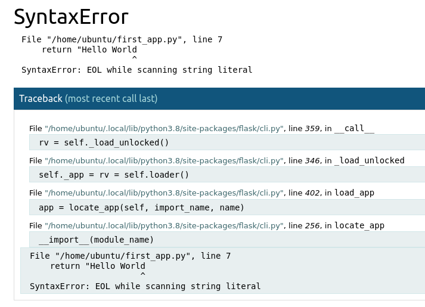
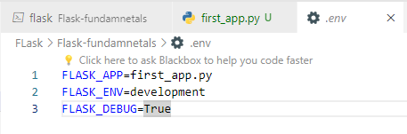
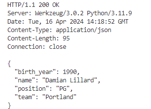
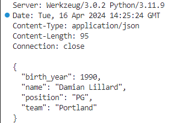

Flask is a famous Python framework for building web applications. Released in 2011, Flask has established itself as a reference for creating an API on Python. It stands out from Django, another famous framework used in Python, because of its lightness. Indeed, Flask is considered as a micro framework, you do not have to define the databases to use or the formatting. However with Flask, you create the core of your web application, then according to your need you add different services. That's why, in a few lines, we can easily display a Hello World on a web page without using an HTML file.
Flask application
Installation of Flask: To install Flask, you just have to go through pip.
pip install Flask
Creating first flask application: Copy the following lines into a file first_app.py:
from flask import Flask
app = Flask(__name__)
@app.route("/")
def hello():
return "Hello World !"
where the directory structure of the project is:
Flask_app/
│
├── first_app.py
└── .env
Let's see in detail what we have done here. First, we instantiated an object of the Flask class. Then, with this object named app, we use it in the decorator @app.route("/"), to create a route (endpoint). Going to /, we get the result of the hello function, which simply returns a Hello World !>. Thus, we can create several routes using the `app' variable.
Then set the environment variable FLASK_APP with the name of your python file : export FLASK_APP=first_app.py or you can also save the environment variables in .env file and Load the environment variables from .env file using: load_dotenv() (For better understanding, you can see my github repo). To run the application, use following command in your terminal:
flask run --host=0.0.0.0
On a web browser go to the address ip_address:5000 (localhost:5000 if you are using your home machine), you should see a "Hello World !" message. Port 5000 is used by default on Flask, you can change the port via the --port flag when using flask run.
The DEBUG mode and the sent data format: It is to be noted here that upto this point, whenever, we change something in our first_app.py, the changes will not be refelcted even though we refresh the browser. So to see the changes, we need to stop the process everytime and restart the API everytime you modify the python file. To overcome the issue, we use DEBUG mode. Once, you have modified and saved your python script, by refreshing the web page, you get the desired change. To enable this mode, you need to set the FLASK_ENV environment variable to development. Also, once this mode is enabled, if your API encounters an error, the thrown Python exception will be displayed on the web page. Below, a quotation mark was missing in the string returned by the function and Flask informs us of this.

To do this, we can again add following script to .env file:
FLASK_ENV=development

Now we can run the following command to run the fast app script:
python first_app.py.
You can now find your web application as before. After that it is recommended to use flask run for the deployment of your application but also because the DEBUG mode is optimized there.
Types of the Flask functions
Flask is a lightweight and flexible web framework for Python, designed to make building web applications quick and easy. It follows the WSGI toolkit and Jinja2 templating engine, providing developers with the tools needed to create web applications in a simple and elegant manner.
Route Functions: These are the heart of a Flask application, handling incoming HTTP requests and returning appropriate responses. Route functions are decorated with @app.route() and are responsible for defining the behavior of specific URLs in the application.
View Functions: View functions are similar to route functions but are not tied to specific URLs. They encapsulate the logic for generating a particular piece of content or performing a specific action within the application. View functions are often called by route functions to generate responses.
Error Handler Functions: Error handler functions handle exceptions or errors that occur during the processing of a request. Flask provides decorators such as @app.errorhandler() to define error handlers for specific HTTP status codes or exception types. These functions return customized error responses to the client.
from flask import Flask, jsonify
app = Flask(__name__)
@app.errorhandler(404)
def page_not_found(error):
return jsonify({'error': 'Page not found'}), 404
if __name__ == '__main__':
app.run()
Before and After Request Functions: Flask allows developers to execute code before and after each request. Functions decorated with @app.before_request are executed before any request is processed, while functions decorated with @app.after_request are executed after a response has been generated. These functions are commonly used for tasks such as setting up database connections or cleaning up resources.
from flask import Flask, g
app = Flask(__name__)
@app.before_request
def before_request():
g.user = 'John' # Example: set up user authentication or database connection
@app.route('/')
def index():
user = g.user # Access user variable set in before_request
return f'Hello, {user}!'
if __name__ == '__main__':
app.run()
Context Processor Functions: Context processor functions allow developers to inject additional variables into the context of template rendering. These functions are decorated with @app.context_processor and can provide dynamic data that is accessible to all templates rendered during a request.
from flask import Flask, render_template, g
app = Flask(__name__)
@app.context_processor
def inject_user():
user = g.user if 'user' in g else None
return dict(user=user)
@app.route('/')
def index():
return render_template('index.html')
if __name__ == '__main__':
app.run()
CLI Commands: Flask supports writing custom command-line interface (CLI) commands using the Flask-Script or Flask-CLI extensions. CLI commands are defined as functions decorated with @app.cli.command() and can be used to perform administrative tasks, database migrations, or other operations from the command line.
from flask import Flask
import click
app = Flask(__name__)
@app.cli.command()
def hello():
click.echo('Hello, CLI!')
if __name__ == '__main__':
app.run()
How to send the different HTTP requests with Flask?
HTTP (Hypertext Transfer Protocol) requests are used to communicate between a client and a server. In Python, Flask provides various methods to handle different types of HTTP requests. Here are the main methods related to HTTP requests in Flask:
GET:The GET method is used to request data from a specified resource. It is the default method used by browsers when you click a link or type a URL into the browser's address bar. Example in Flask:
from flask import Flask, request
app = Flask(__name__)
@app.route('/hello', methods=['GET'])
def hello():
name = request.args.get('name')
return f'Hello, {name}!'
if __name__ == '__main__':
app.run()
So to get the output: Hello Arun!, you need to provide the 'name' in the request url: http://localhost:5000/hello?name=Arun. Similarly with the cURL tool, curl -X GET "http://localhost:5000/hello?name=Arun"
POST:The POST method is used to submit data to be processed to a specified resource. It is often used when submitting forms on web pages.Example in Flask:
from flask import Flask, request
app = Flask(__name__)
@app.route("/hello_post", methods=["POST"])
def hello_post():
data = request.get_json()
return f"Hello {data['name']}!"
if __name__ == '__main__':
app.run()
Unlike the GET method, the other methods do not offer the ability to send information from the provided address to your web browser. You are forced to use the curl command. So to send the dictionary {"name" : "Daniel"} to the /hello_post endpoint via curl:
curl localhost:5000/hello_post -d '{"name": "Daniel"}' -H 'Content-Type: application/json' -X POST
It is common that the same route is accessible from several methods, so we can give an array of methods and define the route according to the chosen method. To do this, we use request again.
from flask import Flask, request
app = Flask(__name__)
@app.route("/hello_post", methods=["POST", "GET"])
def hello_post_get():
if request.method == "POST":
data = request.get_json()
return f"Hello {data['name']}!"
if __name__ == '__main__':
app.run()
PUT:The PUT method is used to update an existing resource or create a new resource if it does not exist. Example in Flask:
from flask import Flask, request
app = Flask(__name__)
@app.route('/update', methods=['PUT'])
def update():
# Process update logic
return 'Resource updated successfully!'
if __name__ == '__main__':
app.run()
DELETE The DELETE method is used to delete a specified resource. Example in Flask:
from flask import Flask
app = Flask(__name__)
@app.route('/delete', methods=['DELETE'])
def delete():
# Process delete logic
return 'Resource deleted successfully!'
if __name__ == '__main__':
app.run()
Example:
Lets consider a example, where we want to show how to:
PUT /add/users will add the user with its data to the database.
POST /update/users will modify the data of an already existing user, otherwise the user will be added to the database.
GET /users/<id> will give the information associated with the id user.
DELETE /delete/<id> will delete the information associated with the id user
from flask import Flask
from flask import request
app = Flask(__name__)
user ={}@app.route("/users/<id>")defget_user(id):return user[id]@app.route("/add",methods=["PUT"])defadd_user():
data = request.get_json()
user[str(len(user))]=data
return"User {} has been added to the database.".format(len(user)-1)@app.route("/update/<id>",methods=["POST"])defupdate_user(id):ifidin user:
user[id]= request.get_json()return"User {} has been modified".format(id)return"User {} is missing from the database".format(id)@app.route("/delete/<id>",methods=["DELETE"])defdelete_user(id):ifidin user:del user[id]return"User {} has been deleted".format(id)return"The user {} is absent from the database".format(id)
This Flask application defines routes to perform CRUD (Create, Read, Update, Delete) operations on a user database. Here are the commands you can use to interact with each route and see the output:
/users/ Route (Retrieve a User):
curl localhost:5000/users/1
Replace 1 with the ID of the user you want to retrieve.
This command updates the user with the specified ID. Replace 1 with the ID of the user you want to update, and {"name": "Updated User", "age": 40} with the new data for the user.
/delete/ Route (Delete a User):
curl -X DELETE "http://localhost:5000/delete/1"
This command deletes the user with the specified ID. Replace 1 with the ID of the user you want to delete.
Passing data to an API
We saw how to create access points to our Flask API with the many HTTP methods. All we had to do was use the route decorator, and then define what the API does when it gets to the endpoint.
Dynamic Route: We saw this first way of sending data:
from flask import Flask
app = Flask(__name__)
@app.route("/hello/")
def hello(name):
return "Hello {}".format(name)
# Do not consider this line
To run this curl -X GET http://localhost:5000/hello/Arun. However, it has not been named, this is what we call, a dynamic route. Indeed, unlike our first route where we always displayed Hello World, here we display Hello name with name the first name we indicate from the URI.
Data types: Moreover, we can specify the type of data we want.
@app.route("/age/")
def hello_age(age):
return "Hello, I am {} years old".format(age)
curl -X GET http://localhost:5000/age/12 can be used to see the port output on the endpoint.
The types to characterize a data are the following:
Type
Description
string
Type by default, accepts any text without /
int
Accepts natural numbers
float
Accepts positive numbers
path
Like the type string but accepts the /
uuid
Accepts strings UUID
Query string: As you know, the GET method has a specificity to send data, it is a query string (query parameters). Indeed, at the end of the URI and using a ?, you can characterize a set of value keys. To execute this type of query, you need to use Flask-Pydantic, downloadable from pip:
pip install Flask-Pydantic
Create the Class, and then validate the function:
from flask import Flask
from pydantic import BaseModel
from flask_pydantic import validate
class Query(BaseModel):
name:str
age:int
app = Flask(__name__)
@app.route("/intro")
@validate()
def intro(query:Query):
return f"Hello, my name is {query.name} and I am {query.age} years old"
if __name__ == "__main__":
app.run(host="0.0.0.0",debug=True)
When you go to http://localhost:5000/intro?name=Arun&age=30, you should see the sentence "Hello, my name is Arun and I am 30 years old". As in the previous section, this is a page that is modified according to the data transmitted in the URI.
To achieve this result, we can identify the new features. The first is the creation of a class inheriting from BaseModel. We have called it Query here, but you can name it anything you like. The attributes of the class correspond to what we want to send by query string. Flask does a type check, because if you put a string in age, you would get a 400 code error.
After defining your class, you need to add the @validate decorator after the route decorator. Without this decorator, you will get a Python error.
Finally, the function you linked with the decorators must take as argument an object of the class inherited by BaseModel, called query (a name other than query is problematic). From this query variable, you get the query parameters.
Example: Create a route that displays, in JSON format, that Damian Lillard is a point guard from Portland, born in 1990 using a query string
from flask import Flask
from pydantic import BaseModel
from flask_pydantic import validate
class Player(BaseModel):
name:str
position:str
team:str
birth_year:int
app = Flask(__name__)
@app.route("/info")
@validate()
def info(query:Player):
return query.dict()
Query following: curl -X GET -i "localhost:5000/info?name=Damian%20Lillard&position=PG&team=Portland&birth_year=1990" gives:

Request body: The idea is the same as before, make a new class inheriting from BaseModel, add the @validate decorator and get the information from the object. The only difference is that we do not use the GET method and we have to name the variable body instead of query.
You'll have to configure the class according to what you want to send via the POST method and specify in the route decorator that we send a POST method.
from flask import Flask
from pydantic import BaseModel
from flask_pydantic import validate
class Player(BaseModel):
name:str
position:str
team:str
birth_year:int
app = Flask(__name__)
@app.route("/info",methods=["POST"])
@validate()
def info(body:Player):
return body.dict()
Now if we use the: curl -X 'POST' -i 'http://127.0.0.1:5000/info_post' -H 'Content-Type: application/json' -d '{ "birth_year": 1990, "name": "Damian Lillard", "position": "PG", "team":"Portland"}'

Header:
Data is present on the response header. Sometimes you need to retrieve this information. To do this, you need to go through the request object which has many attributes related to this header, such as User_agent accessible by the user_agent attribute. The list of attributes is available here.
If you do not want to go through the attributes of request, you can simply use the headers attribute of request, which will tell you the User-Agent as follows request.headers["User-Agent"].
Even though the headers attribute behaves like a dictionary, its type is not, it is werkzeug.datastructures.EnvironHeaders. You can see this by creating a route that displays the type of request.headers and using curl.
from flask import request
@app.route("/head")
def head():
if request.headers.get("username"):
return "Hello {}".format(request.headers.get("username"))
elif request.headers.get("enterprise"):
return "Hello {}".format(request.headers.get("enterprise"))
else:
return "Hello World !"
With the
curl -i localhost:5000/head -H 'enterprise: VisionAnalytica' statement, you will get a Hello VisionAnalytica,
while with curl -i localhost:5000/head -H 'username: Arun', we will get a Hello Arun
Updated soon.....
Error and response handling
We have seen that the DEBUG mode displays the error encountered in the Python script, but this does not help the lambda user. You have to adapt the error message so that the user uses your API correctly. For example, let's say you have implemented an API for a Machine Learning model. A variable in your model expects a value between 0 and 10, but the user enters a value of 1000, your Machine Learning model will not work. You have to send a response adapted to the user so that the user puts a value between 0 and 10.
Similarly, we encountered an error code 404 when we wrote in a GET method that expected a natural integer instead of a string. However, we had to send a BadRequest error message of code 400.
That's why, when you create an API, you have to do some error handling too.
There are two ways to act when an error occurs. The first way is to use the decorator @app.errorhandler(). You put it in front of your function as with the @app.route() decorator. All you have to do is specify the error code or the name of the error class imported from werkzeug.exceptions as an argument to the errorhandler decorator.
from flask import request
@app.route("/head")
from flask import Flask
from werkzeug.exceptions import NotFound
app = Flask(__name__)
@app.route("/hello")
def hello():
return "Hello World"
@app.errorhandler(NotFound)
def handler_error404(err):
return "You have encountered an error of 404",404
Now go to an address that returns a 404 error, for example the address localhost:5000/helloname. You will get the message from the errorhandler decorator function, and in the terminal's request history, you will get a 404 error (if you do not specify this code, the request will be coded 200). You can make a better page to indicate the error.
The err variable comes from the NotFound class, so you can make a better response through this variable.
The second way is to use the register_error_handler() method which takes two arguments. The first argument takes the error code or class name while the second argument takes the function that should be called on the error. The method must be called on the app variable.
For databricks, you can look at tutorial videos on youtube at youtube video by Bryan Cafferky,
writer of the book "Master Azure Databricks". A great playlist for someone who just want to learn about the big data analytics at Databricks Azure cloud platform.